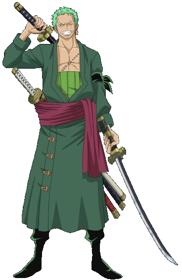

Roronoa Zoro, também conhecido como "Caçador de Piratas" Zoro, é o combatente dos Piratas do Chapéu de Palha e um ex-caçador de recompensas. Ele foi o primeiro membro a se juntar à tripulação e se tornou conhecido por sua habilidade como mestre espadachim e por sua grande força. Devido ao respeito que possui entre os demais membros, muitos acreditam que ele seja o imediato da tripulação. Zoro é um dos quatro melhores lutadores dos Chapéus de Palha, ao lado de Luffy, Sanji e Jinbe, e seu grande sonho é se tornar o maior espadachim do mundo. Ele também é considerado um dos doze piratas conhecidos como "A Pior Geração" e atualmente possui uma recompensa de 1.111.000.000 de Berries.